Testbericht 8 – CLI für Agenten
Umfang
Die CLI cad ist so erweitert, dass ein Agent (z. B. Claude Code) Modelle ganz ohne UI entwickeln und prüfen kann – allein oder während ein Mensch dieselben Dateien in der UI bearbeitet. Neu:
| Befehl/Option | Zweck |
|---|---|
cad outline | Übersicht eines Projekts in einem Aufruf |
render --views | Kontaktbogen mit beschrifteten Teilbildern gleicher Skalierung |
render --azimuth/--elevation/--zoom/--target/--fit/--perspective | Freie Kamera |
render --part/--line (mehrfach)/--node/--only | Auswahl, kombinierbar mit --module, -D |
render --show grids,anchors,handles,edges,labels,bbox,dims | Überlagerungen |
render --section/--section-plane/--section-flip, --xray | Schnitt mit gefüllter Kappe, Röntgen |
cad measure | Abstände (Anker, Rasterpunkte, Koordinaten), Hülle, Volumen, Fläche, Kollisionen, Bauteilabstand |
cad watch | Neu auswerten bei Dateiänderung, eine JSON-Zeile je Lauf, optional Bild |
cad set | Standardwert oder Literal über die Engine ändern, geprüft, atomar, --dry-run |
cad DATEI.scad, cad | UI-Einstieg reserviert (Exit 2 mit Meldung), ohne Argumente Hilfe |
Jeder Befehl hat --json mit festem, versioniertem Schema (schema_version 1, vollständig im Kopf von crates/cad-cli/src/main.rs, Kurzfassung im Skill .claude/skills/cad-cli/SKILL.md) und die bisherigen Exit-Codes (0 ok, 1 Modellfehler, 2 Aufruf, 3 Kernel). Empfohlener Ablauf für Agenten: outline → editieren → check → render --views all --show grids,anchors → inspect/measure → export. Beschriftungen zeichnet cad-render mit einer eingebetteten Bitmap-Schrift (DejaVu Sans Mono, erzeugt von tools/font/gen-font.py), ohne neue Laufzeitabhängigkeit.
1 cad outline
Ein Aufruf liefert die Struktur eines Projekts: Module mit Datei:Zeile, Parametern (Standardwert, geratener Typ), Raster und Anker je Modul (mit den Standardwerten ausgewertet, Ausdrucksebenen mit Ausdruck und Wert), Funktionen, Variablen der obersten Ebene mit Werten, benannte Instanzen und Bauteile (Hülle, Volumen), include/use und die Diagnosenanzahl. --no-kernel lässt Hüllen und Volumen weg.
$ cad outline examples/projekt-gehaeuse/gehaeuse.scad 275 ms, Exit 0examples/projekt-gehaeuse/gehaeuse.scad: 0 Fehler, 0 Warnungen
Dateien:
include <konstanten.scad> gehaeuse.scad:3
use <lib/teile.scad> gehaeuse.scad:4
Module:
schraubdom(h = 10: Zahl) lib/teile.scad:6–12
Anker: oben = [0, 0, 10] dir [0, 0, 1] (Z.11)
gehaeuse(w = 60: Zahl, d = 40: Zahl, h = 25: Zahl, t = 2: Zahl) lib/teile.scad:14–30
Raster g (Z.15): x: links = 0, innen_l = 2, innen_r = w - t → 58, rechts = 60; y: vorne = 0, innen_v = 2, innen_h = d - t → 38, hinten = 40; z: boden = 0, innen_b = 2, oben = 25
Anker: deckel_mitte = [2, 2, 25] dir [0, 0, 1] (Z.29)
deckel(w = 60: Zahl, d = 40: Zahl, t = 2: Zahl) lib/teile.scad:32–35
Variablen:
breite = 60 konstanten.scad:2
tiefe = 40 konstanten.scad:3
hoehe = 25 konstanten.scad:4
wand = 2 konstanten.scad:5
abstand = 10 konstanten.scad:6
Benannte Instanzen:
gehaeuse: gehaeuse Z.6 Bauteil, Hülle [0, 0, 0]–[60, 40, 25], Volumen 15474.7326 mm³
dom[0]: schraubdom Z.27
dom[1]: schraubdom Z.27
dom[2]: schraubdom Z.27
dom[3]: schraubdom Z.27
deckel: deckel Z.7 Bauteil, Hülle [0, 50, 0]–[60, 90, 5], Volumen 10738.08 mm³
Anker: gehaeuse.deckel_mitte = [2, 2, 25] dir [0, 0, 1], dom[0].oben = [5, 5, 21] dir [0, 0, 1], dom[1].oben = [55, 5, 21] dir [0, 0, 1], dom[2].oben = [5, 35, 21] dir [0, 0, 1], dom[3].oben = [55, 35, 21] dir [0, 0, 1]
Gesamt: Hülle [0, 0, 0]–[60, 90, 25] (60 × 90 × 25 mm), 33 Knoten$ cad outline crates/cad-cli/tests/data/gehaeuse.scad --json 45 ms, Exit 0{
"modules": [
{
"anchors": [
{"dir": null, "line": 15, "name": "ecke", "point": [40, 30, 20]},
{"dir": [0, 0, 1], "line": 16, "name": "oben", "point": [0, 0, 20]}
],
"end_line": 17,
"errors_with_defaults": 0,
"file": "gehaeuse.scad",
"grids": [
{
"file": "gehaeuse.scad",
"line": 4,
"name": "g",
"planes": [
{"axis": "x", "expr": "0", "kind": "literal", "name": "links", "value": 0},
{"axis": "x", "expr": "t", "kind": "literal", "name": "innen_l", "value": 3},
{"axis": "x", "expr": "w - t", "kind": "expression", "name": "innen_r", "value": 37},
"… (5 weitere)"
]
}
],
"line": 3,
"name": "gehaeuse",
"params": [
{"default": "40", "default_value": 40, "name": "w", "type": "number"},
{"default": "30", "default_value": 30, "name": "d", "type": "number"},
{"default": "20", "default_value": 20, "name": "h", "type": "number"},
"… (1 weitere)"
],
"path": [],
"qualified": "gehaeuse"
},
{
"anchors": [],
"end_line": 19,
"errors_with_defaults": 0,
"file": "gehaeuse.scad",
"grids": [],
"line": 19,
"name": "deckel",
"params": [],
"path": [],
"qualified": "deckel"
}
],
"parts": [
{
"bounds": {"max": [60, 30, 20], "min": [0, 0, 0], "size": [60, 30, 20]},
"line": 21,
"module": "gehaeuse",
"name": "k",
"node": 1,
"volume": 8460
}
],
"counts": {"errors": 0, "modules": 2, "nodes": 12, "parts": 1, "warnings": 0}
}2 cad render: Kontaktbogen
--views iso,front,top,right (oder all) setzt beschriftete Teilbilder zu einem Bild zusammen. Alle Teilbilder haben dieselbe Skalierung (px/mm) und denselben Blickpunkt (Mitte des Modells), damit Größen zwischen den Ansichten vergleichbar sind; --size ist die Gesamtgröße. Das JSON nennt je Teilbild Lage und Kamera.
$ cad render crates/cad-cli/tests/data/gehaeuse.scad -o docs/reports/08-cli-agenten/img/bogen.png --module gehaeuse --views all --show "grids,anchors,labels,dims" --size 1500x1100 --json 166 ms, Exit 0{
"width": 1500,
"height": 1100,
"views": [
{
"camera": {
"azimuth": 45,
"dir": [-0.5774, 0.5774, -0.5774],
"elevation": 35.2644,
"eye": [67.3148, -32.3148, 57.3148],
"fov_deg": null,
"height_mm": 59.7425,
"projection": "ortho",
"right": [0.7071, 0.7071, 0],
"scale_px_per_mm": 9.0053,
"target": [20, 15, 10],
"up": [-0.4082, 0.4082, 0.8165],
"width_mm": 81.9516
},
"height": 538,
"name": "iso",
"width": 738,
"x": 8,
"y": 8
},
{
"camera": {
"azimuth": 0,
"dir": [0, 1, 0],
"elevation": 0,
"eye": [20, -66.9516, 10],
"fov_deg": null,
"height_mm": 59.7425,
"projection": "ortho",
"right": [1, 0, 0],
"scale_px_per_mm": 9.0053,
"target": [20, 15, 10],
"up": [0, 0, 1],
"width_mm": 81.9516
},
"height": 538,
"name": "front",
"width": 738,
"x": 754,
"y": 8
},
{
"camera": {
"azimuth": 0,
"dir": [0, 0, -1],
"elevation": 90,
"eye": [20, 15, 91.9516],
"fov_deg": null,
"height_mm": 59.7425,
"projection": "ortho",
"right": [1, 0, 0],
"scale_px_per_mm": 9.0053,
"target": [20, 15, 10],
"up": [0, 1, 0],
"width_mm": 81.9516
… (11 Zeilen mehr)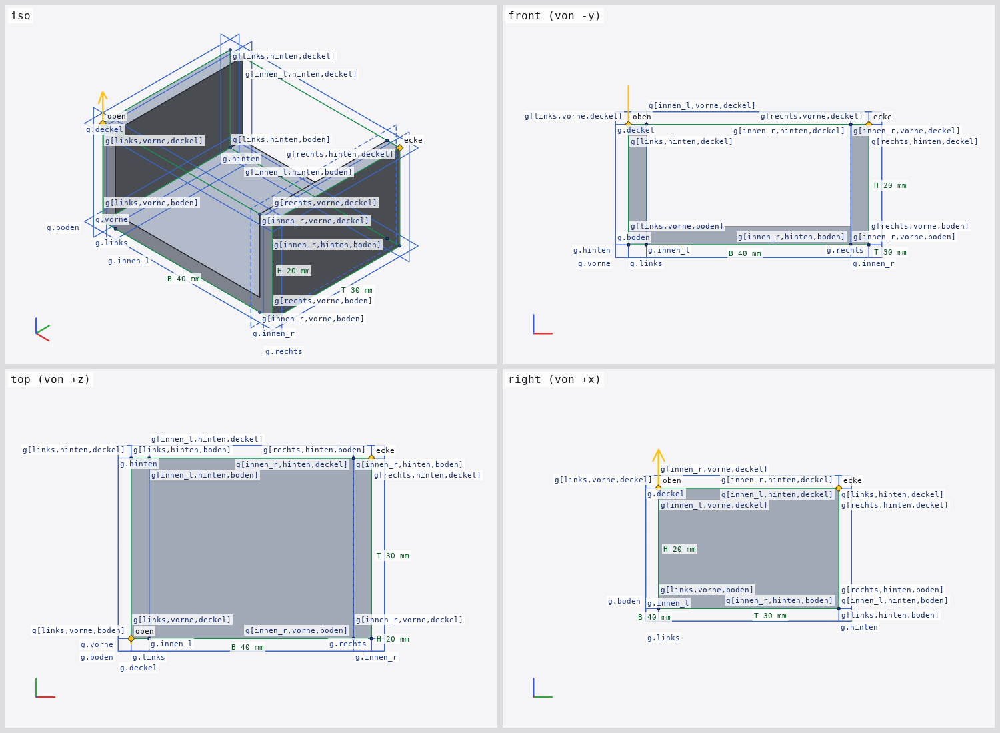
$ cad render examples/projekt-gehaeuse/gehaeuse.scad -o docs/reports/08-cli-agenten/img/bogen-projekt.png --views "iso,front,top,right" --show "anchors,labels" --size 1500x1100 --json 656 ms, Exit 0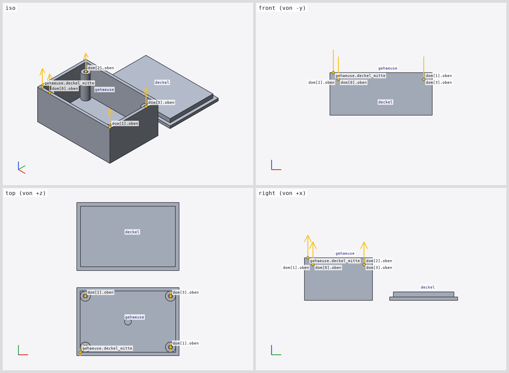
3 cad render: freie Kamera und Auswahl
Kamera: --azimuth (0° von vorn/−y, 90° von rechts/+x), --elevation (90° von oben), --zoom, --target x,y,z, --fit all|part:NAME|line:N, --ortho/--perspective [--fov]. Auswahl: --part NAME (nur Bauteile), --line N und --node I mehrfach (Knoten voll, Rest gedimmt, --only lässt den Rest weg), kombinierbar mit --module und -D.
$ cad render examples/spec/fillet_zonen.scad -o docs/reports/08-cli-agenten/img/kamera-azimut.png --line 12 --azimuth 120 --elevation 30 --size 700x500 --json 525 ms, Exit 0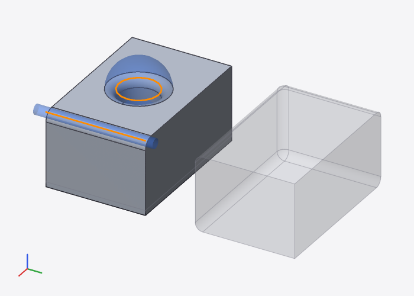
$ cad render crates/cad-cli/tests/data/gehaeuse.scad -o docs/reports/08-cli-agenten/img/kamera-perspektive.png --perspective --fov 45 --azimuth -30 --elevation 20 --size 700x500 --json 74 ms, Exit 0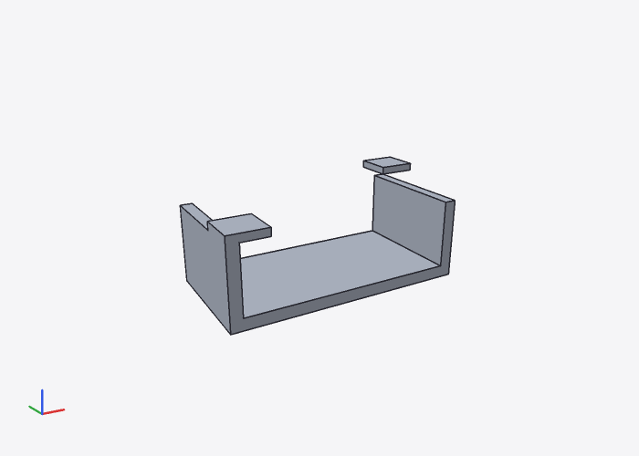
$ cad render examples/projekt-gehaeuse/gehaeuse.scad -o docs/reports/08-cli-agenten/img/auswahl-part.png --part deckel --show dims --size 700x500 --json 337 ms, Exit 0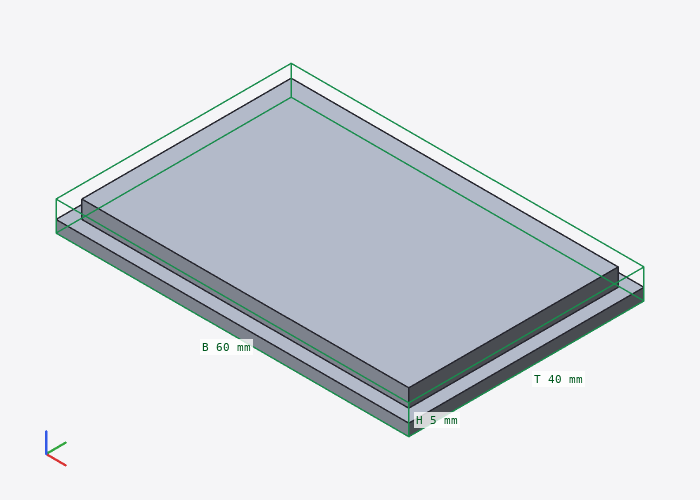
$ cad render crates/cad-cli/tests/data/gehaeuse.scad -o docs/reports/08-cli-agenten/img/auswahl-zeilen.png --line 22 --line 23 --fit line:22 --zoom 0.8 --size 700x500 --json 159 ms, Exit 0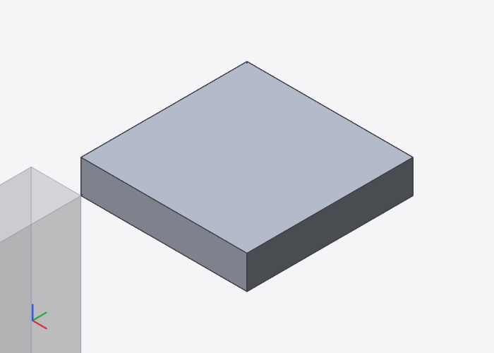
$ cad render crates/cad-cli/tests/data/gehaeuse.scad -o docs/reports/08-cli-agenten/img/kamera-perspektive.png --perspective --fov 45 --azimuth -30 --elevation 20 --size 700x500 --json 74 ms, Exit 0{
"camera": {
"azimuth": -30,
"dir": [0.4698, 0.8138, -0.342],
"elevation": 20,
"eye": [-34.1027, -96.0291, 60.1489],
"fov_deg": 45,
"height_mm": 116.2131,
"projection": "perspective",
"right": [0.866, -0.5, 0],
"scale_px_per_mm": 4.3024,
"target": [31.8081, 18.1317, 12.1698],
"up": [0.171, 0.2962, 0.9397],
"width_mm": 162.6983
}
}$ cad render crates/cad-cli/tests/data/gehaeuse.scad -o docs/reports/08-cli-agenten/img/auswahl-zeilen.png --line 22 --line 23 --fit line:22 --zoom 0.8 --size 700x500 --json 159 ms, Exit 0{
"highlighted": [5, 6, 8, "… (2 weitere)"],
"visible_nodes": [
{"file": null, "idx": 0, "instance": null, "label": "group", "line": 1, "role": "dimmed", "triangles": 54},
{
"file": null,
"idx": 5,
"instance": null,
"label": "translate",
"line": 22,
"role": "highlighted",
"triangles": 12
},
{
"file": null,
"idx": 6,
"instance": null,
"label": "deckel",
"line": 22,
"role": "highlighted",
"triangles": 12
},
"… (3 weitere)"
]
}4 cad render: Überlagerungen
--show grids,anchors,handles,edges,labels,bbox,dims (oder all): Raster des Kontextmoduls (Ebenen als Rechtecke am Rand des Rasters, Ausdrucksebenen gestrichelt, Schnittpunkte als Punkte, Ebenennamen g.links), Anker als Rauten mit Namen und Pfeil bei dir, Griffe als Quadrate, verdeckte Kanten gestrichelt, labels beschriftet Rasterpunkte g[a,b,c] (bis 48 Punkte je Raster), Griffe und Bauteile, bbox den Hüllquader, dims zusätzlich Breite/Tiefe/Höhe in mm. Beschriftungen, die sich überdecken würden, werden versetzt oder weggelassen.
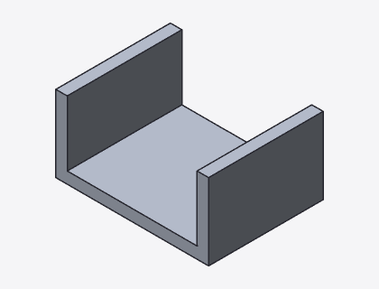
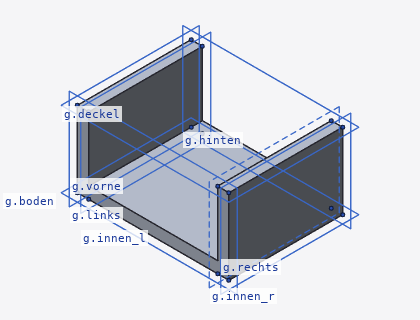
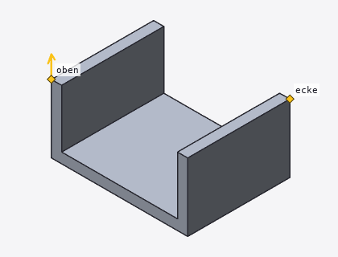
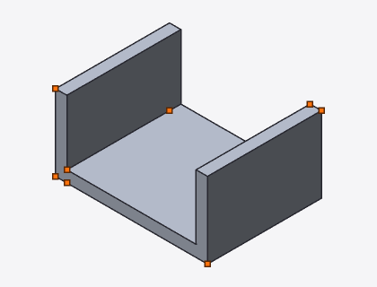
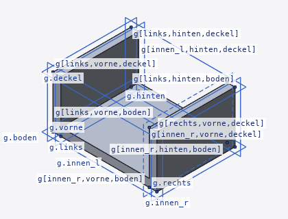
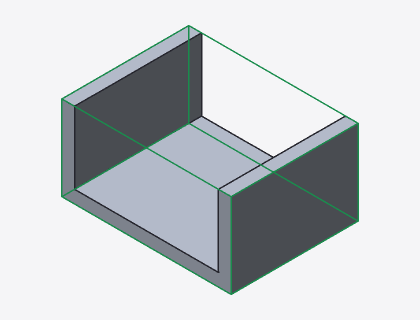
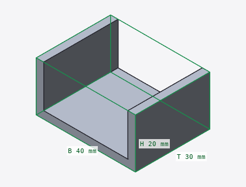
| --show | Raster | Rasterpunkte | Anker | Griffe | Beschriftungen | Linien |
|---|---|---|---|---|---|---|
| grids | 1 | 16 | 0 | 0 | 8 | 8 |
| anchors | 0 | 0 | 2 | 0 | 2 | 2 |
| handles | 0 | 0 | 0 | 13 | 0 | 0 |
| edges | 0 | 0 | 0 | 0 | 0 | 24 |
| grids,labels | 1 | 16 | 0 | 0 | 24 | 8 |
| bbox | 0 | 0 | 0 | 0 | 0 | 12 |
| dims | 0 | 0 | 0 | 0 | 3 | 12 |
5 cad render: Schnitt und Röntgen
Schnitt: --section x=WERT|y=WERT|z=WERT, --section-plane px,py,pz,nx,ny,nz, --section-flip. Konvention (gleich für die spätere UI): Ebene durch p mit Normale n; entfernt wird die Hälfte, in die n zeigt, es bleibt (q − p)·n ≤ 0. z=10 heißt p = (0,0,10), n = +z; --section-flip kehrt n um. Die Schnittfläche wird als schraffierte Kappe in eigener Farbe gezeichnet (Schraffur je Körper abwechselnd), die Schnittkontur als Linie.
Verfahren: Clipping im Renderer mit Kappe, kein Kernel-Boolean. Die Dreiecke werden an der Ebene geometrisch abgeschnitten (Sutherland–Hodgman je Dreieck, ebenso Kanten). Die Kappe folgt dem Stencil-Prinzip der GPU: für jede Abtastung wird gezählt, wie oft der Sichtstrahl bis zur Ebene die Oberfläche eines Körpers kreuzt (Top-Left-Regel, damit gemeinsame Kanten genau einmal zählen); ist die Zahl ungerade, liegt der Ebenenpunkt im Körper und die Kappe wird in Ebenentiefe geschrieben. Gründe: (1) dasselbe Verfahren wird die UI mit GPU-Clipping und Stencil-Kappe verwenden, Bilder und Konvention stimmen also überein; (2) es braucht keine Kernelarbeit – ein Boolean mit einem Halbraum kostet bei verrundeten Körpern schnell Sekunden und kann scheitern, das Clipping kostet einige ms und gelingt immer; (3) es funktioniert für jede Ebene, auch für Ansichten mehrerer Bauteile. Voraussetzung sind geschlossene Netze; die Tessellierung der B-Rep-Körper ist geschlossen. Offene Flächen (surface) und transparente Körper bekommen keine Kappe.
$ cad render crates/cad-cli/tests/data/gehaeuse.scad -o docs/reports/08-cli-agenten/img/schnitt-ohne.png --size 600x450 --json 82 ms, Exit 0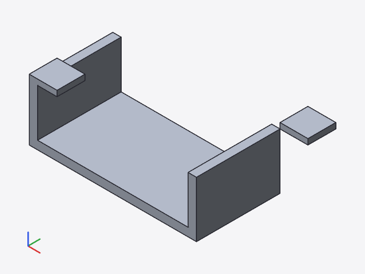
$ cad render crates/cad-cli/tests/data/gehaeuse.scad -o docs/reports/08-cli-agenten/img/schnitt-z.png --section z=10 --size 600x450 --json 121 ms, Exit 0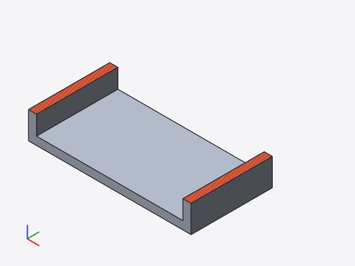
$ cad render crates/cad-cli/tests/data/gehaeuse.scad -o docs/reports/08-cli-agenten/img/schnitt-flip.png --section z=10 --section-flip --view bottom --size 600x450 --json 86 ms, Exit 0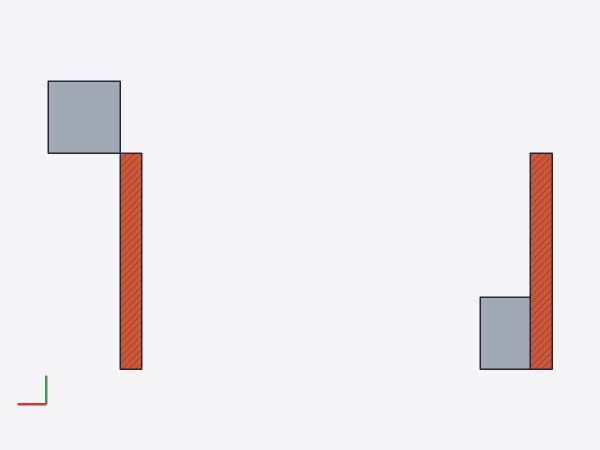
$ cad render examples/spec/flasche.scad -o docs/reports/08-cli-agenten/img/schnitt-ebene.png --section-plane "0,0,0,1,1,0" --perspective --size 600x450 --json 444 ms, Exit 0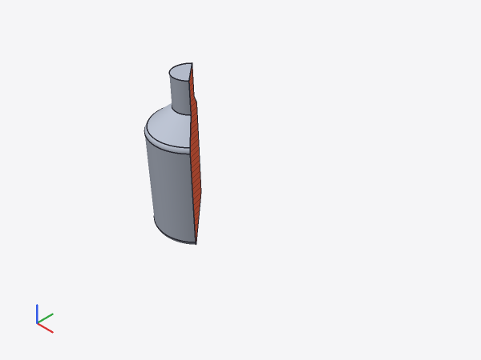
$ cad render tools/report/report8-fallstudie/v2.scad -o docs/reports/08-cli-agenten/img/schnitt-fallstudie.png --section x=20 --size 600x450 --json 395 ms, Exit 0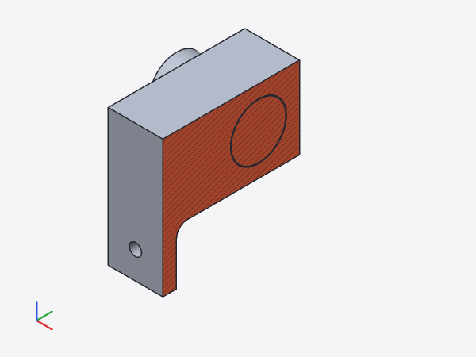
$ cad render examples/spec/fillet_zonen.scad -o docs/reports/08-cli-agenten/img/xray.png --xray --size 600x450 --json 389 ms, Exit 0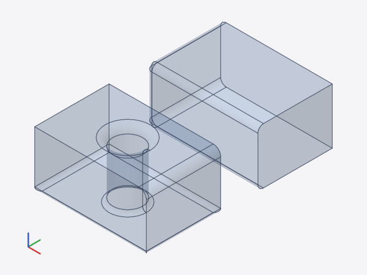
$ cad render crates/cad-cli/tests/data/gehaeuse.scad -o docs/reports/08-cli-agenten/img/schnitt-z.png --section z=10 --size 600x450 --json 121 ms, Exit 0{
"section": {
"keeps": "(q - point) · normal <= 0",
"method": "renderer clipping + cap",
"normal": [0, 0, 1],
"point": [0, 0, 10]
},
"bounds": {"max": [70, 40, 22], "min": [0, 0, 0], "size": [70, 40, 22]}
}Sichtbare Fläche (Pixel ≠ Hintergrund, 600×450): ohne Schnitt 74.159, mit --section z=10 58.204 (78 %), davon Kappe 3.967. Derselbe Vergleich ist der Test render_section_reduces_visible_area.
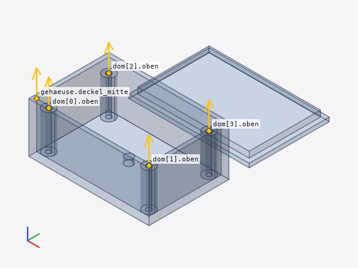
6 cad measure
--between A B mit Ankern (k.ecke, k[2].ecke, im Modulkontext ecke), Rasterpunkten des Kontextmoduls (g[a,b,c], Einträge auch Zahlen oder _) und Koordinaten [x,y,z]: Abstand und Differenzvektor. --bounds/--volume/--area ZIEL mit all, part:NAME, line:N, node:I. --interference: paarweise Schnittvolumen aller Bauteile, exakt über den Kernel (Boolean-Schnitt der B-Rep, vorher Test der Hüllquader); Kollision ab --tolerance (Standard 0,001 mm³). --clearance A B: kleinster Abstand zweier Bauteile als exakter Dreieck-Dreieck-Abstand ihrer Tessellierungen (BVH, Toleranz --mesh-tol 0,01 mm, Genauigkeit ± 2·0,01 mm); überschneiden sich die Bauteile, ist der Abstand 0 und collision: true.
Sollwerte Spec-Beispiel gehaeuse: k.ecke = [60, 30, 20], k.oben = [0, 0, 20] → √(60² + 30²) = 67,082 mm; im Modul g[links,vorne,boden] → g[rechts,hinten,deckel] = √(40² + 30² + 20²) = 53,852 mm; Volumen k = 60·30·20 − 54·30·17 = 8460 mm³. kollision.scad: a und b überlappen 2 × 10 × 10 = 200 mm³, c steht 5 mm neben b.
$ cad measure crates/cad-cli/tests/data/gehaeuse.scad --between k.ecke k.oben --bounds part:k --volume part:k --area part:k 40 ms, Exit 0Abstand k.ecke [60, 30, 20] → k.oben [0, 0, 20]: 67.082 mm (Δ [-60, -30, 0]) Hülle part:k: [0, 0, 0] – [60, 30, 20], Größe 60 × 30 × 20 mm Volumen part:k: 8460 mm³ Fläche part:k: 6384 mm²
$ cad measure crates/cad-cli/tests/data/gehaeuse.scad --module gehaeuse --between "g[links,vorne,boden]" "g[rechts,hinten,deckel]" 13 ms, Exit 0Abstand g[links,vorne,boden] [0, 0, 0] → g[rechts,hinten,deckel] [40, 30, 20]: 53.8516 mm (Δ [40, 30, 20])
$ cad measure crates/cad-cli/tests/data/gehaeuse.scad --module gehaeuse -D w=60 --between ecke "[0,0,0]" 13 ms, Exit 0Abstand ecke [60, 30, 20] → [0,0,0] [0, 0, 0]: 70 mm (Δ [-60, -30, -20])
$ cad measure crates/cad-cli/tests/data/gehaeuse.scad --between "g[links,vorne,boden]" "[0,0,0]" 37 ms, Exit 2cad measure: g[links,vorne,boden]: Raster `g` ist nicht im Kontext (Raster gelten nur in ihrem Modul: --module NAME)
$ cad measure crates/cad-cli/tests/data/kollision.scad --interference --clearance b c 22 ms, Exit 0Kollision a ↔ b: 200 mm³ Abstand b ↔ c: 5 mm (± 0.02 mm, Tessellierung 0.01 mm), zwischen [18, 10, 0] und [23, 10, 0]
$ cad measure crates/cad-cli/tests/data/kollision.scad --interference --json 33 ms, Exit 0{
"interference": {
"collisions": [{"a": "a", "b": "b", "volume": 200}],
"method": "kernel intersection (exact B-rep)",
"pairs": [
{"a": "a", "b": "b", "bounds_overlap": true, "collision": true, "volume": 200},
{"a": "a", "b": "c", "bounds_overlap": false, "volume": 0},
{"a": "b", "b": "c", "bounds_overlap": false, "volume": 0}
],
"parts": ["a", "b", "c"],
"tolerance": 0.001
}
}$ cad measure examples/projekt-gehaeuse/gehaeuse.scad --interference --clearance gehaeuse deckel --json 488 ms, Exit 0{
"clearance": {
"a": "gehaeuse",
"accuracy": 0.02,
"b": "deckel",
"collision": false,
"distance": 10,
"intersection_volume": 0,
"mesh_distance": 10,
"mesh_tol": 0.01,
"method": "minimum triangle–triangle distance of both tessellations",
"point_a": [60, 40, 0],
"point_b": [60, 50, 0],
"triangles": [1820, 28]
}
}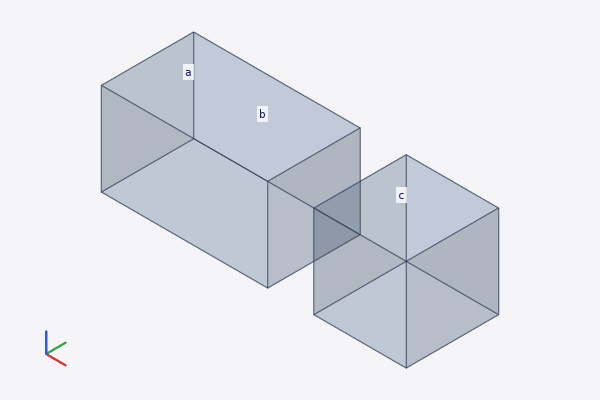
7 cad set
--param modul.param=wert schreibt einen Standardwert (wie „Als Standard übernehmen“ in der UI, Module auch aus use-Dateien), --literal [datei:]zeile:spalte=wert ersetzt das editierbare Literal an der Stelle – dieselben Literale, die die UI über Griffe, Regler und Rasterebenen ändert. Vor dem Schreiben wird das geänderte Projekt ausgewertet; neue Fehler verhindern das Schreiben (Exit 1, --force überstimmt). Geschrieben wird atomar (temporäre Datei + Umbenennen); --dry-run zeigt nur den Diff.
$ cad set reports/tmp/report8/work/set.scad --param gehaeuse.w=50 --literal 21:17=70 --dry-run 6 ms, Exit 0--- reports/tmp/report8/work/set.scad
+++ reports/tmp/report8/work/set.scad
@@ -1,5 +1,5 @@
// Zweck: Spec-Beispiel „gehaeuse“ – Raster g im Modul, Box zwischen Rasterpunkten, Anker
// nach außen, benannte Instanz k, Deckel am Anker und ein zweites Raster aus k.ecke.x.
-module gehaeuse(w = 40, d = 30, h = 20, t = 3) {
+module gehaeuse(w = 50, d = 30, h = 20, t = 3) {
grid g {
x: links = 0, innen_l = t, innen_r = w - t, rechts = w;
@@ -19,5 +19,5 @@
module deckel() cube([10, 10, 2]);
-k: gehaeuse(w = 60);
+k: gehaeuse(w = 70);
translate(k.ecke) deckel();
translate(k.oben) rotate(to = dir(k.oben)) deckel();
(--dry-run: nichts geschrieben)$ cad set reports/tmp/report8/work/set.scad --param gehaeuse.w=50 --literal 21:17=70 --json 7 ms, Exit 0{
"changes": [
{
"col": 21,
"file": "reports/tmp/report8/work/set.scad",
"kind": "param",
"line": 3,
"new": "50",
"old": "40",
"spec": "gehaeuse.w=50"
},
{
"col": 17,
"file": "reports/tmp/report8/work/set.scad",
"kind": "literal",
"line": 21,
"new": "70",
"old": "60",
"spec": "21:17=70"
}
],
"written": ["reports/tmp/report8/work/set.scad"],
"errors_before": 0,
"errors_after": 0
}$ cad set reports/tmp/report8/work/set.scad --literal 5:30=4 6 ms, Exit 2cad set: --literal 5:30=4: an 5:30 steht kein editierbares Literal (Literale der Zeile: 5:20 `0`)
$ cad set reports/tmp/report8/work/set.scad --param gehaeuse.t=foo 8 ms, Exit 1--- reports/tmp/report8/work/set.scad
+++ reports/tmp/report8/work/set.scad
@@ -1,5 +1,5 @@
// Zweck: Spec-Beispiel „gehaeuse“ – Raster g im Modul, Box zwischen Rasterpunkten, Anker
// nach außen, benannte Instanz k, Deckel am Anker und ein zweites Raster aus k.ecke.x.
-module gehaeuse(w = 50, d = 30, h = 20, t = 3) {
+module gehaeuse(w = 50, d = 30, h = 20, t = foo) {
grid g {
x: links = 0, innen_l = t, innen_r = w - t, rechts = w;
nicht geschrieben: die Änderung erzeugt Fehler (0 → 5); --force schreibt trotzdem
reports/tmp/report8/work/set.scad:3:45: Warnung (Auswertung): unbekannte Variable `foo`
reports/tmp/report8/work/set.scad:5:33: Fehler (Auswertung): Ebene `innen_l` muss Zahl oder Zahlenliste sein, ist undef
reports/tmp/report8/work/set.scad:5:46: Warnung (Auswertung): undefinierte Operation (Zahl - undef)
reports/tmp/report8/work/set.scad:5:46: Fehler (Auswertung): Ebene `innen_r` muss Zahl oder Zahlenliste sein, ist undef
reports/tmp/report8/work/set.scad:12:15: Fehler (Auswertung): Raster `g` hat keine Ebene `innen_l`
reports/tmp/report8/work/set.scad:12:37: Fehler (Auswertung): Raster `g` hat keine Ebene `innen_r`
reports/tmp/report8/work/set.scad:12:13: Warnung (Auswertung): `a` muss ein Vektor [x, y, z] sein, ist undef
reports/tmp/report8/work/set.scad:12:35: Warnung (Auswertung): `b` muss ein Vektor [x, y, z] sein, ist undef
reports/tmp/report8/work/set.scad:12:9: Fehler (Auswertung): box() braucht zwei Eckpunkte `a` und `b`8 Reservierter UI-Einstieg
cad datei.scad (Positionsargument, das kein Befehl ist) startet später die Desktop-UI. Heute: Meldung und Exit 2. cad ohne Argumente zeigt die Hilfe (Exit 0). Ein Tippfehler im Befehl ergibt „unbekannter Befehl“.
$ cad crates/cad-cli/tests/data/gehaeuse.scad 5 ms, Exit 2cad: UI nicht in diesem Build (`cad crates/cad-cli/tests/data/gehaeuse.scad` startet später die Desktop-UI). Befehle: check, outline, eval, inspect, render, measure, watch, set, export, diff-kernels Beispiel: cad render crates/cad-cli/tests/data/gehaeuse.scad -o bild.png --views all
$ cad 5 ms, Exit 0Parametrisches CAD: prüfen, auswerten, ansehen, messen, exportieren Usage: cad [COMMAND] Commands: check Diagnosen mit Zeile und Spalte outline Übersicht in einem Aufruf: Module mit Parametern, Funktionen, Variablen, Raster und Anker je Modul, benannte Instanzen, Bauteile, Dateien, Diagnosen eval Baum, Werte, Inline-Hinweise, Raster, Anker inspect Was eine Zeile erzeugt: Knoten, Hülle, Volumen, ausgewählte Kanten, Meldungen render Bild des Modells (PNG): Ansichten, Kontaktbogen, freie Kamera, Auswahl, Überlagerungen, Schnitt, Röntgen measure Messen: Abstand zweier Punkte (Anker, Rasterpunkt, Koordinate), Hülle, Volumen, Fläche, Kollisionen der Bauteile, Abstand zweier Bauteile watch Beobachtet die Datei und eingebundene Dateien; je Auswertung eine JSON-Zeile (mit --json) bzw. eine Textzeile, optional neues Bild set Code ändern über die Engine: Standardwert eines Modulparameters oder ein Literal; schreibt atomar (`--dry-run`: nur Diff) export Exportdatei (STL binär, 3MF oder STEP, nach Endung oder --format) diff-kernels Vergleich SMLib ↔ solidcore je Knoten (Volumen, Flächen, Kanten, ausgewählte Kanten) und Abdeckung von solidcore (nur Entwicklung) help Print this message or the help of the given subcommand(s) Options: -h, --help Print help -V, --version Print version Ablauf für Agenten: outline → editieren → check → render --views all --show grids,anchors → inspect/measure → export. `cad watch` wertet bei jeder Dateiänderung neu aus (Cache bleibt). … (1 Zeilen mehr)
9 cad watch
cad watch DATEI [--json] [--render bild.png …] beobachtet die Datei und alle eingebundenen Dateien (Crate notify, inotify unter Linux; beobachtet werden die Verzeichnisse, damit auch atomares Speichern der Editoren erkannt wird), wertet bei jeder Änderung in derselben Sitzung neu aus und schreibt je Lauf eine JSON-Zeile (Diagnosen, Zeiten, Volumen, Bauteile, Bild). Der Engine-Cache bleibt erhalten: unveränderte Knoten kommen aus dem Cache. Ende mit Strg+C, --once-after-change oder --timeout S.
| Datei | Lauf | Auslöser | Gesamt ms | Kernel ms | Bild ms | aus Cache / Knoten | Kernel-Aufrufe | Volumen mm³ |
|---|---|---|---|---|---|---|---|---|
| variabler_radius.scad | 1: Start (alles neu) | start | 1.101,9 | 734,3 | 367,1 | 1 / 12 | 29 | 56.527,5 |
| variabler_radius.scad | 2: Kommentar angehängt (alles aus dem Cache) | variabler_radius.scad | 29,7 | 0,0 | 28,9 | 12 / 12 | 0 | 56.527,5 |
| variabler_radius.scad | 3: deckel = 22 (zwei Verrundungen neu) | variabler_radius.scad | 947,1 | 569,0 | 377,5 | 6 / 12 | 16 | 61.297,6 |
| variabler_radius.scad | 4: Radiusfunktion der Tasche geändert | variabler_radius.scad | 329,6 | 103,0 | 226,0 | 9 / 12 | 9 | 56.573,0 |
| projekt-gehaeuse | 1: Start (alles neu) | start | 252,5 | 164,7 | – | 9 / 33 | 29 | 26.212,8 |
| projekt-gehaeuse | 2: konstanten.scad: abstand = 15 (nur Lage des Deckels) | konstanten.scad | 6,5 | 5,3 | – | 31 / 33 | 2 | 26.212,8 |
| projekt-gehaeuse | 3: lib/teile.scad: dom_r = 3.5 (Schraubdome neu) | lib/teile.scad | 210,0 | 126,3 | – | 20 / 33 | 11 | 26.988,8 |
{
"command": "watch",
"run": 3,
"trigger": "change",
"changed": ["variabler_radius.scad"],
"ok": true,
"errors": 0,
"stats": {"cache_hits": 6, "kernel_calls": 16, "nodes": 12},
"volume": 61297.5811,
"timings": {"eval_ms": 0.2223, "kernel_ms": 569.007, "render_ms": 377.4542, "total_ms": 947.1355},
"render": {"height": 400, "output": "docs/reports/08-cli-agenten/img/watch.png", "width": 800}
}
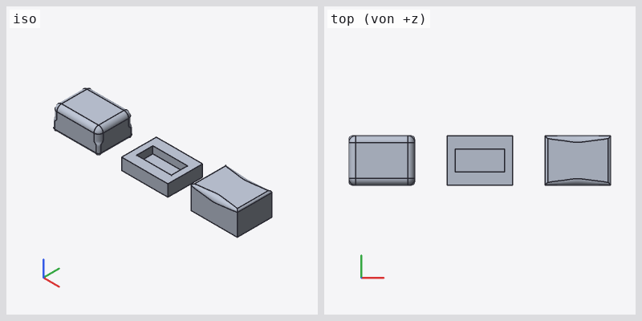
10 Leistung bei wiederholten Aufrufen
Jeder CLI-Aufruf startet einen neuen Prozess mit leerem Cache. Gemessen: cad render zweimal hintereinander (Standardansicht 1024×768), Wandzeit des Prozesses und die Zeiten aus dem JSON (timings: Auswerten inkl. Kernel, davon Kernel, Bild inkl. Tessellierung). Prozessstart mit Parser ohne Kernel (check --no-kernel): 7 ms.
| Datei | Lauf | Wandzeit ms | Auswerten ms | davon Kernel ms | Bild ms |
|---|---|---|---|---|---|
| spec/variabler_radius.scad | 1 | 1.017 | 631 | 630 | 375 |
| spec/variabler_radius.scad | 2 | 1.104 | 667 | 666 | 426 |
| projekt-gehaeuse/gehaeuse.scad | 1 | 579 | 340 | 218 | 229 |
| projekt-gehaeuse/gehaeuse.scad | 2 | 610 | 378 | 248 | 220 |
| spec/gehaeuse.scad | 1 | 159 | 37 | 34 | 114 |
| spec/gehaeuse.scad | 2 | 165 | 30 | 29 | 126 |
Entscheidung: kein persistenter Cache zwischen Aufrufen. Der zweite Aufruf ist so schnell wie der erste (kein Cache), ein Aufruf dauert bis 1,10 s – bei variabler_radius an der Grenze von 1 s, fast alles Kernelzeit (Verrundungen) und Tessellierung. Ein Datei-Cache der Kernel-Ergebnisse wäre aufwendig: die Ergebnisse sind Handles auf SMLib-Objekte im Speicher der nativen Bibliothek, ein Cache müsste die B-Rep serialisieren und wieder einlesen (und mit der Provenienz der Flächen und Kanten), was selbst Kernelzeit kostet. Stattdessen cad watch: dieselbe Sitzung bleibt bestehen, der Engine-Cache hält alle Knotenergebnisse; ein Lauf nach einer Änderung kostet nur die geänderten Knoten (Tabelle in Abschnitt 9: 30 ms für eine Änderung ohne Geometrieeinfluss, 947 ms wenn zwei verrundete Körper neu entstehen). Der Skill empfiehlt cad watch für Schleifen mit vielen kleinen Schritten.
Laufzeit je Befehl (Spec-Beispiel gehaeuse, Wandzeit)
| Befehl | ms | Exit |
|---|---|---|
| outline | 46 | 0 |
| check | 44 | 0 |
| render (iso) | 143 | 0 |
| render --views all --show grids,anchors | 170 | 0 |
| render --section z=10 | 285 | 0 |
| measure --between --volume | 35 | 0 |
| measure --interference (kollision) | 25 | 0 |
| measure --clearance b c (kollision) | 19 | 0 |
| set --dry-run | 6 | 0 |
11 Fallstudie: Agent entwickelt ein Teil nur mit der CLI
Der Agent (dieser Bericht ist von Claude erzeugt) hat einen Wandhalter für eine Stange Ø 20 mm entworfen, ohne die UI zu öffnen: Quelltext mit dem Edit-Werkzeug, alles Weitere mit cad. Die Schritte unten sind die tatsächlich ausgeführten, vom Generator nachgespielt (Fassungen in tools/report/report8-fallstudie/). Der Agent hat dabei die Bilder mit dem Read-Werkzeug angesehen; gefunden wurde ein echter Entwurfsfehler (kein Spiel zwischen Stange und Bohrung), sichtbar nur durch measure --clearance, nicht im Bild.
Schritt 1: Entwurf schreiben
Erste Fassung mit Raster g (Ebenen für Platte, Ausleger, Bohrung, Schraublöcher), zwei Ankern und den Bauteilen halter und stange.
// Fallstudie Bericht 8: Wandhalter für eine Stange, nur mit der CLI entwickelt.
// Grundplatte an der Wand (y = 0), Ausleger mit Bohrung für die Stange, zwei Schraublöcher.
module halter(b = 40, t = 5, h = 50, a = 30, d = 20, spiel = 0) {
grid g {
x: links = 0, loch_l = 10, mitte = b / 2, loch_r = b - 10, rechts = b;
y: wand = 0, platte = t, achse = t + a, vorn = t + a + d / 2 + t;
z: unten = 0, loch = 10, arm = h - d - 2 * t, achse_z = h - t - d / 2, oben = h;
}
difference() {
union() {
box(g[links, wand, unten], g[rechts, platte, oben]);
box(g[links, platte, arm], g[rechts, vorn, oben]);
}
cylinder(g[-1, achse, achse_z], g[b + 1, achse, achse_z], r = (d + spiel) / 2);
for (x = [g.loch_l, g.loch_r])
cylinder(g[x, -1, loch], g[x, t + 1, loch], r = 2.25);
}
anchor stange = g[links, achse, achse_z], dir = [1, 0, 0];
anchor schraube = g[loch_l, wand, loch], dir = [0, -1, 0];
}
module stange(l = 60, d = 20) cylinder(h = l, r = d / 2);
halter: halter();
translate(halter.stange) rotate(to = dir(halter.stange)) translate([0, 0, -10]) stange: stange();
Schritt 2: Prüfen und verstehen
check meldet keine Fehler; outline zeigt Raster, Anker und Bauteile mit Hülle und Volumen.
$ cad check reports/tmp/report8/work/wandhalter.scad 159 ms, Exit 0reports/tmp/report8/work/wandhalter.scad: 0 Fehler, 0 Warnungen
$ cad outline reports/tmp/report8/work/wandhalter.scad 146 ms, Exit 0reports/tmp/report8/work/wandhalter.scad: 0 Fehler, 0 Warnungen
Module:
halter(b = 40: Zahl, t = 5: Zahl, h = 50: Zahl, a = 30: Zahl, d = 20: Zahl, spiel = 0: Zahl) wandhalter.scad:3–20
Raster g (Z.4): x: links = 0, loch_l = 10, mitte = b / 2 → 20, loch_r = b - 10 → 30, rechts = 40; y: wand = 0, platte = 5, achse = t + a → 35, vorn = t + a + d / 2 + t → 50; z: unten = 0, loch = 10, arm = h - d - 2 * t → 20, achse_z = h - t - d / 2 → 35, oben = 50
Anker: stange = [0, 35, 35] dir [1, 0, 0] (Z.18), schraube = [10, 0, 10] dir [0, -1, 0] (Z.19)
stange(l = 60: Zahl, d = 20: Zahl) wandhalter.scad:22–22
Benannte Instanzen:
halter: halter Z.24 Bauteil, Hülle [0, 0, 0]–[40, 50, 50], Volumen 51274.5869 mm³
stange: stange Z.25 Bauteil, Hülle [-10, 25, 25]–[50, 45, 45], Volumen 18849.5559 mm³
Anker: halter.stange = [0, 35, 35] dir [1, 0, 0], halter.schraube = [10, 0, 10] dir [0, -1, 0]
Gesamt: Hülle [-10, 0, 0]–[50, 50, 50] (60 × 50 × 50 mm), 15 KnotenSchritt 3: Ansehen
Kontaktbogen mit Ankern und Beschriftung: Platte, Ausleger, Bohrung und Stange liegen wie geplant.
$ cad render reports/tmp/report8/work/wandhalter.scad -o docs/reports/08-cli-agenten/img/fs-1.png --views all --show "anchors,labels" --size 1400x1000 339 ms, Exit 0docs/reports/08-cli-agenten/img/fs-1.png: 1400x1000, Ansichten iso, front, top, right, Hülle 60 × 50 × 50 mm
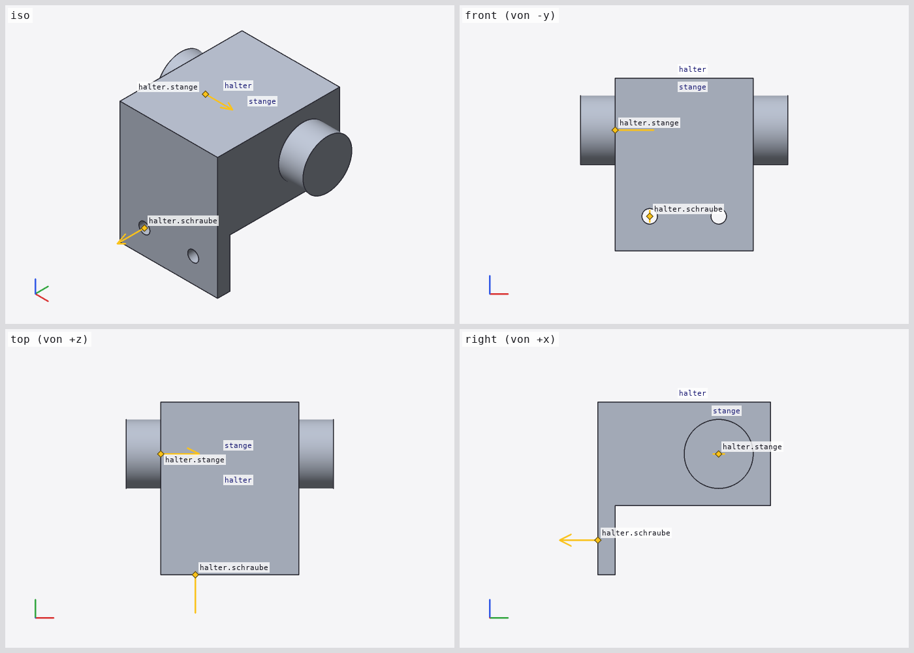
Schritt 4: Nachmessen
Kollisionen und Abstand Stange ↔ Bohrung: Abstand 0 – die Stange liegt ohne Spiel in der Bohrung (Ø 20 in Ø 20). Fehler im Entwurf gefunden.
$ cad measure reports/tmp/report8/work/wandhalter.scad --interference --clearance halter stange 318 ms, Exit 0Keine Kollisionen (2 Bauteile, 1 Paare mit überlappender Hülle geprüft, Toleranz 0.001 mm³) Abstand halter ↔ stange: 0 mm (± 0.02 mm, Tessellierung 0.01 mm), zwischen [40, 31.7825, 44.4683] und [40, 31.7825, 44.4683]
$ cad measure reports/tmp/report8/work/wandhalter.scad --between halter.schraube halter.stange 245 ms, Exit 0Abstand halter.schraube [10, 0, 10] → halter.stange [0, 35, 35]: 44.1588 mm (Δ [-10, 35, 25])
Schritt 5: Korrigieren mit cad set
Spiel 0,5 mm als Standardwert setzen (erst Diff, dann schreiben); danach Abstand 0,25 mm (radial) ± 0,02 mm.
$ cad set reports/tmp/report8/work/wandhalter.scad --param halter.spiel=0.5 --dry-run 7 ms, Exit 0--- reports/tmp/report8/work/wandhalter.scad
+++ reports/tmp/report8/work/wandhalter.scad
@@ -1,5 +1,5 @@
// Fallstudie Bericht 8: Wandhalter für eine Stange, nur mit der CLI entwickelt.
// Grundplatte an der Wand (y = 0), Ausleger mit Bohrung für die Stange, zwei Schraublöcher.
-module halter(b = 40, t = 5, h = 50, a = 30, d = 20, spiel = 0) {
+module halter(b = 40, t = 5, h = 50, a = 30, d = 20, spiel = 0.5) {
grid g {
x: links = 0, loch_l = 10, mitte = b / 2, loch_r = b - 10, rechts = b;
(--dry-run: nichts geschrieben)$ cad set reports/tmp/report8/work/wandhalter.scad --param halter.spiel=0.5 7 ms, Exit 0--- reports/tmp/report8/work/wandhalter.scad
+++ reports/tmp/report8/work/wandhalter.scad
@@ -1,5 +1,5 @@
// Fallstudie Bericht 8: Wandhalter für eine Stange, nur mit der CLI entwickelt.
// Grundplatte an der Wand (y = 0), Ausleger mit Bohrung für die Stange, zwei Schraublöcher.
-module halter(b = 40, t = 5, h = 50, a = 30, d = 20, spiel = 0) {
+module halter(b = 40, t = 5, h = 50, a = 30, d = 20, spiel = 0.5) {
grid g {
x: links = 0, loch_l = 10, mitte = b / 2, loch_r = b - 10, rechts = b;
geschrieben: reports/tmp/report8/work/wandhalter.scad$ cad measure reports/tmp/report8/work/wandhalter.scad --clearance halter stange 368 ms, Exit 0Abstand halter ↔ stange: 0.2499 mm (± 0.02 mm, Tessellierung 0.01 mm), zwischen [40, 41.8678, 27.3913] und [40, 41.6957, 27.5725]
Schritt 6: Innenkante verrunden
Zonenblock fillet(4) um die Innenkante Platte/Ausleger (zone(g[*, platte, arm], d = 2)), mit dem Edit-Werkzeug eingefügt. inspect der fillet-Zeile: genau 1 Kante ausgewählt.
--- vorher
+++ nachher
@@ -7,9 +7,12 @@
z: unten = 0, loch = 10, arm = h - d - 2 * t, achse_z = h - t - d / 2, oben = h;
}
difference() {
- union() {
- box(g[links, wand, unten], g[rechts, platte, oben]);
- box(g[links, platte, arm], g[rechts, vorn, oben]);
+ fillet(4) {
+ union() {
+ box(g[links, wand, unten], g[rechts, platte, oben]);
+ box(g[links, platte, arm], g[rechts, vorn, oben]);
+ }
+ zone(g[*, platte, arm], d = 2); // Innenkante Platte/Ausleger
}
cylinder(g[-1, achse, achse_z], g[b + 1, achse, achse_z], r = (d + spiel) / 2);
for (x = [g.loch_l, g.loch_r])
$ cad check reports/tmp/report8/work/wandhalter.scad 273 ms, Exit 0reports/tmp/report8/work/wandhalter.scad: 0 Fehler, 0 Warnungen
$ cad inspect reports/tmp/report8/work/wandhalter.scad --line 10 119 ms, Exit 0Kontext: Modul halter(b = 40, t = 5, h = 50, a = 30, d = 20, spiel = 0.5)
Z.10: fillet(4) {
[2] fillet Z.10:9–16:10 ok
Hülle [0, 0, 0] – [40, 50, 50]
Volumen 64137.3452 mm³, Fläche 11138.1947 mm²
ausgewählte Kanten: 1
Hinweis: 1 Zone
Hinweis: 1 KanteSchritt 7: Raster und Zone ansehen
Zeile 10 hervorgehoben im Modulkontext, Raster mit Ebenennamen (100 Rasterpunkte: nur Ebenen beschriftet).
$ cad render reports/tmp/report8/work/wandhalter.scad -o docs/reports/08-cli-agenten/img/fs-2.png --line 10 --views "iso,right" --show "grids,labels" --size 1400x620 652 ms, Exit 0docs/reports/08-cli-agenten/img/fs-2.png: 1400x620, Ansichten iso, right, Zeile 10: [2] fillet, Kontext Modul halter, Hülle 40 × 50 × 50 mm Hinweis: Raster g: 100 Punkte, nur Ebenen beschriftet (Punkte bis 48; --view und --zoom für Details)
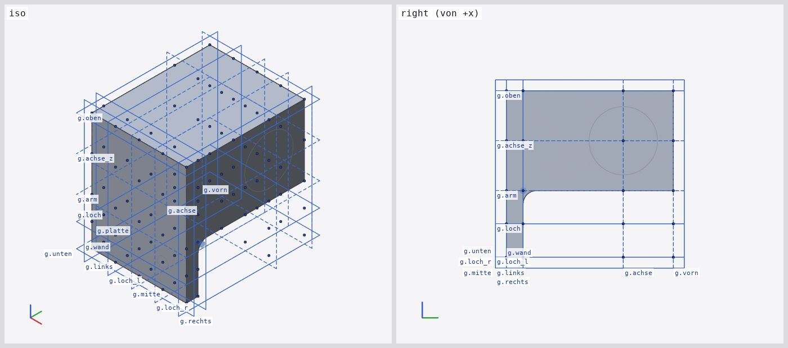
Schritt 8: Schnitt durch die Bohrung
Schnitt x = 20 zeigt Stange und Bohrung mit Spalt; Maße des Ganzen.
$ cad render reports/tmp/report8/work/wandhalter.scad -o docs/reports/08-cli-agenten/img/fs-3.png --section x=20 --show dims --size 900x650 866 ms, Exit 0docs/reports/08-cli-agenten/img/fs-3.png: 900x650, Ansicht iso, Schnitt durch [20, 0, 0] Normale [1, 0, 0], Hülle 60 × 50 × 50 mm
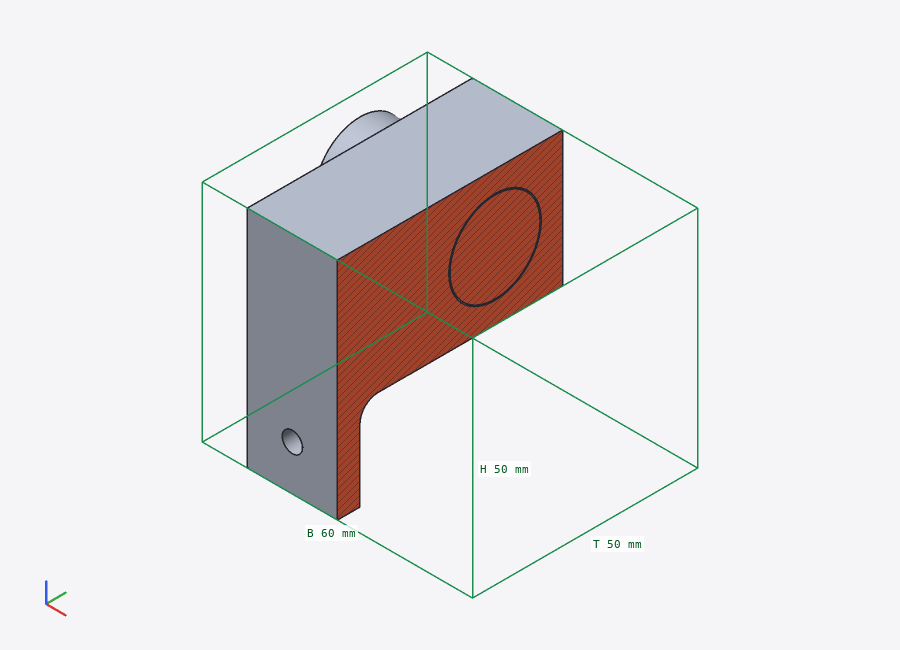
Schritt 9: Ausgeben
Jedes Bauteil als STEP-Datei.
$ cad export reports/tmp/report8/work/wandhalter.scad --all-parts -o reports/tmp/report8/work/teile --format step 185 ms, Exit 0halter: reports/tmp/report8/work/teile/halter.step (0 Dreiecke, 14823 Bytes, Volumen 50775.7597 mm³) stange: reports/tmp/report8/work/teile/stange.step (0 Dreiecke, 3821 Bytes, Volumen 18849.5559 mm³)
Bilanz: 13 CLI-Aufrufe, zusammen 3,7 s. Was gefehlt hätte ohne die neuen Funktionen: die Abstandsmessung (Spiel), die Rasternamen im Bild (welche Ebene ist arm?) und der Schnitt durch die Bohrung.
12 Tests
cargo test --workspace: 318 bestanden, 0 fehlgeschlagen, 0 ignoriert;cargo clippy --workspace --all-targets -- -D warnings: ohne Befund;cargo fmt --check: ohne Befund.- Neu in
crates/cad-cli/tests/agent.rs(assert_cmd, je Befehl/Option mit JSON-Feldern): outline (Spec-Beispiel, Funktionen/Variablen, Projekt), render (Kontaktbogen: Bildgröße und gleiche Skalierung; freie Kamera; Auswahl; Überlagerungen ändern Pixel; Schnitt verkleinert die sichtbare Fläche und erzeugt Kappenpixel; Röntgen), measure (Anker, Rasterpunkte, Koordinaten gegen Sollwerte des Spec-Beispiels; Hülle, Volumen; Kollision antests/data/kollision.scad; Abstand), watch (Datei ändern → zweite JSON-Zeile, Cache-Treffer steigen; Text und Timeout), set (Parameter, Literal, Diff, Ablehnung, Projektdateien), UI-Einstieg. - Neu in
crates/cad-render/tests/features.rs: Kamerawinkel = Standardansichten, Schnitt mit Kappe an einem geschlossenen Würfel (von oben ganz Kappe, von unten keine), Perspektive und feste Skalierung, Marker/Beschriftung/Titel/Kontaktbogen; ingeom.rs: Dreieck-Dreieck-Abstand an Würfeln (Fläche, Kante, Ecke, Überlappung).
| Testdatei | Test | Ergebnis |
|---|---|---|
| unittests src/main.rs | geom::tests::distance_of_cubes | ok |
| tests/agent.rs | outline_spec_example | ok |
| tests/agent.rs | measure_points_bounds_volume | ok |
| tests/agent.rs | outline_functions_variables_and_projects | ok |
| tests/agent.rs | measure_interference_and_clearance | ok |
| tests/agent.rs | render_free_camera | ok |
| tests/agent.rs | render_section_reduces_visible_area | ok |
| tests/agent.rs | render_overlays_change_pixels | ok |
| tests/agent.rs | render_contact_sheet | ok |
| tests/agent.rs | set_param_and_literal | ok |
| tests/agent.rs | ui_entry_is_reserved | ok |
| tests/agent.rs | render_xray | ok |
| tests/agent.rs | set_in_project_file | ok |
| tests/agent.rs | watch_text_and_timeout | ok |
| tests/agent.rs | watch_reports_a_second_run_after_a_change | ok |
| tests/agent.rs | render_selection | ok |
| tests/features.rs | angles_match_named_views | ok |
| tests/features.rs | perspective_and_fixed_scale | ok |
| tests/features.rs | markers_labels_title_and_sheet | ok |
| tests/features.rs | section_clips_and_caps_a_closed_mesh | ok |
13 Grenzen
- Schnittkappen setzen geschlossene Netze voraus; bei offenen Flächen (
surfaceohnethicken) und transparenten Körpern gibt es keine Kappe. Die Kappe ist eben und einfarbig (Schraffur je Körper abwechselnd), keine Materialunterscheidung. --clearancemisst an der Tessellierung (Genauigkeit ± 2·--mesh-tol),--interferenceexakt über den Kernel; Bauteile, deren Hülle sich nicht überlappt, werden ohne Kernel als kollisionsfrei gezählt.- Rasterpunkte werden bis 48 Punkte je Raster beschriftet, darüber nur die Ebenen (Hinweis in
notes); überdeckte Beschriftungen fallen weg. outlinewertet jedes Modul mit seinen Standardwerten aus; Module mit Pflichtparametern ohne Standardwert zeigen dann ggf. keine Raster (errors_with_defaults).watchliest bei jeder Änderung alle Projektdateien neu; Änderungen innerhalb der Entprellzeit (--debounce, 60 ms) werden zu einem Lauf zusammengefasst.- Kein persistenter Cache zwischen Aufrufen (Abschnitt 10).